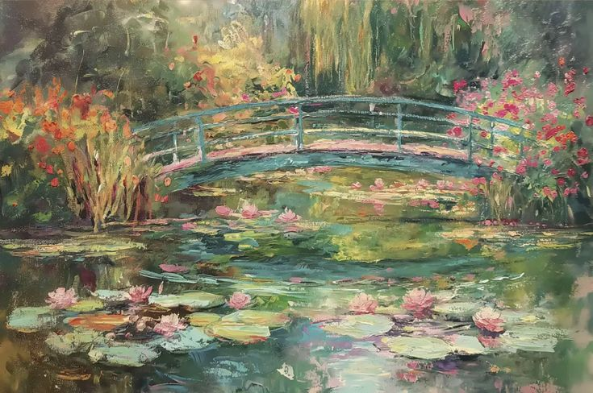

Calla Lily
Magnificent Beauty.

Floriagraphy, also known as the language of flowers, was popularized in the Victorian era as a way to convey messages and emotions through the selection and arrangement of flowers. Each flower carries its own unique symbolism, allowing individuals to express feelings that may be difficult to articulate with words alone.
Start with a feeling, then explore what flower conveys your messages the best
Magnificent Beauty.
Purity and Sweetness.

Declaration of love.
Calla
Someone said that your time
Will be over soon
But Calla
You can always grow back, oh
If you don't have enough sunlight
Calla
Someone said that your time
Will be over soon
But Calla
You can always grow back, oh
The song "calla" by the South Korean indie-pop band wave to earth
(written by Daniel Kim) uses the calla lily as a central metaphor for
resilience, tender love, and renewal in the face of hardship
The name "calla" addresses the flower (and symbolically a loved one).
Even when "someone said that your time will be over soon," the lyrics
reassure her that she "can always grow back". It is a message of healing and
inner strength after setbacks or emotional pain.
Is there a flower that reminds you of someone? Or a feeling you wish you could put into words?
Every story begins with something worth expressing.